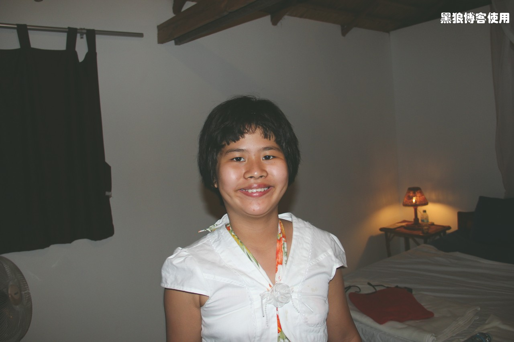

柬埔寨自助游（5）
黑狼语录：
—— 别人过情人节的时候，我过元宵节。
题外话：
—— 这几天单位事情比较多，博文也拖了几天才开始写。
—— 今天是 2 月 14 日，大包子早晨吃饭的时候让我送她礼物，我说：“情人节是没有结婚的男女恋人过的节日。”，她说：“那妈妈为何也要礼物？”，我说： “结过婚的人过情人节是为了追求浪漫。”，她说：“你送她什么？”，我说：“我已经送了，就是今早吃的汤圆。”。
1 月 30 日早 8:00 左右，终于结束了难熬的一夜，到了西哈努克，下一次一定要尝试 Hotel bus，肯定比我们坐的 Sleeping bus 舒服。汽车站是个很乱的大杂院子，公厕收费每人 500 瑞尔。
今天的目的地是 Koh Rong Samloem 岛，在地图上很小，距离西哈努克很近，未来的 4 天将在那里度过。
联系酒店的前台接站。10 分钟后，来了一辆 SUV，上车后很快就到了一个旅行服务店（或者小型旅行服务社），发现酒店留的电话竟然是这个店的电话，店里售卖汽车票、船票等等。到了岛上才知道 Koh Rong Samloem 岛是“世外桃源”，没有这个店确实不方便。
店主会说简单的中文，沟通时需要英、中文混合才行。很简单的几个询问解答，居然花了 10 多分钟才搞定，女店主是个平和的人，看到我们焦躁的神情，认为我们生气了，也显出不安，最后所有问题沟通完毕后，大家才露出了笑容。
（店主认为我们生气、表示不解、安慰等等，当时我没听明白，琢磨很久才体会，并且到现在还不知道自己的理解是否正确）
其实说白了，焦点就一个：这个小岛每天只有一趟往返的船，4 天后，如果我们 2 月 3 号去金边，只能乘坐晚上 8:30 大巴，每人 12 美金，到金边要夜里 1 点到 2 点，时间太晚，2 月 4 号早 8 点返回广州的飞机，没时间睡觉了。
最后，决定让店主帮我们包车，从西哈努克到金边，大约 200 公里，费用 50 美金，晚上 9 点能到金边。
购买了去 Koh Rong 岛上的往返船票，每人 20 美金，小孩 15 美金。去旁边的餐饮店里吃了早餐，赶时间，先付了款，不到 14 美金，一张餐桌上有一个老外拿着大把的钱在冲着我说着什么，最后一句 “Thank you.” 我听懂了，其它的没听明白，等我要走的时候发现还没有找零钱，又发现那个老外冲着我说话，才知道原来他才是老板，哈哈，还以为他也是食客呢。
9 点左右，突突车来服务店接客人上船，虽然柬埔寨并不繁华和发达，但各种接送还是很方便的。
到了船上才知道需要大概 3 个小时才能到达 Koh Rong Samloem 岛。
到了船上才知道原来提供免费的午餐。
船上的人很少，船行驶了 1 个小时，停在了中途的一个小岛边缘，吃午饭，船上立刻涌出了 10 来个男男女女，跳到海中，很高的跳台，至少 4 米，看着都害怕。大包子也想跳下去，被我说服，海水太深了，咱还是吃东西看游泳吧。
大海清澈，海水碧蓝（不过照片中怎么看不出来呢），阳光耀眼。
12:30 到了Koh Rong Samloem，耀眼的银白色沙滩，晃得眼睛都睁不开。我和胡有理在沙滩上艰难地拖着行李走向宾馆的时候，大包子就冲进了大海。
又学会了一个单词 Resort，在小岛上的宾馆都是 Resort。
安顿好后，才发现这个小岛是真正清静的地方。这里游人稀少，大部分游客下午 3:30 乘船返回西哈努克；这里唯一的电器是灯泡；这里只有夜里才供电；这里的手机信号时断时续，没有互联网。
只有大包子是真正高兴的人，一个人享受着百米海滩，悠闲地爬泳，我和老胡还没有清静 2 个小时，就开始担心未来的 4 天是否太清静了。
远离人群，一下子由喧嚣变成了宁静，白天捡贝壳，夜里听着海水的哗哗声安然入睡，这里真的是“世外桃源”。
（在小木屋内，只有晚上 6 点以后才有电）
题外话：
—— 下班的时间到了，为了让胡有理尽快看到我的情人节礼物，今天这一篇就到这里了。